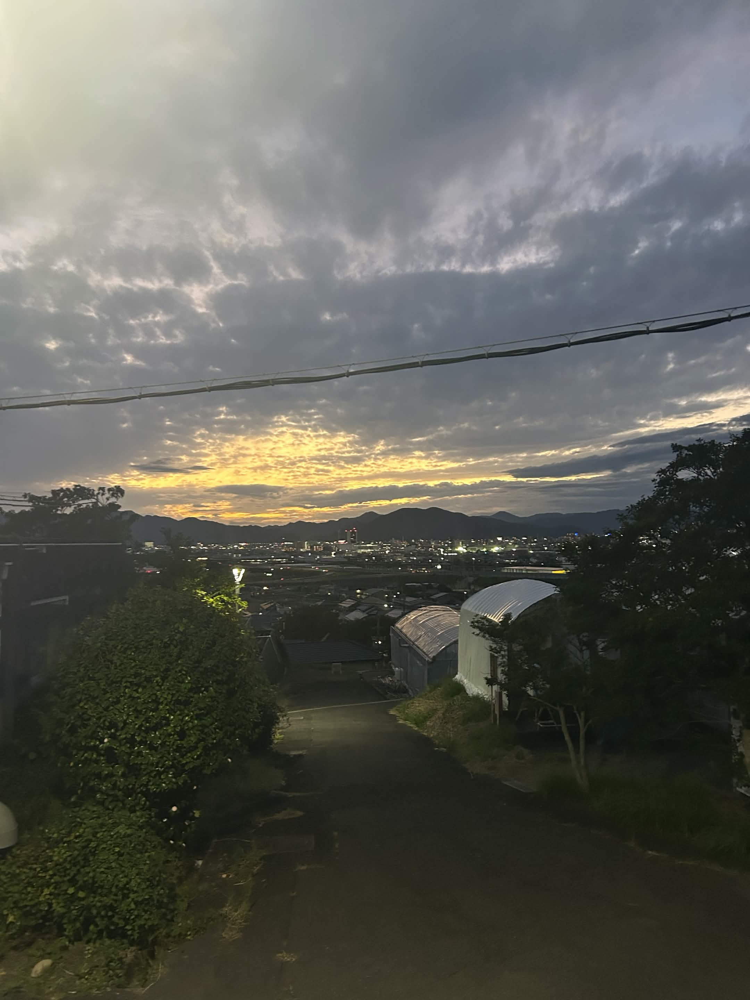

2026 10/30 (Fr)
1日目は平日だしあんま人来ないだろうなと思っていたし実際盛況という訳ではなかったが、それでもいくつかグッズが売れて嬉しかった。特に前回の静大祭で売ってたステッカーが可愛くてまた来ました！的なことを言ってくれたお客さんが二人もいて本当にびっくりした。いや本当に、本当に今までで一番嬉しいかもしれない......
今日は基本的に会場の設営と店番をしていたので他のブースはあまり回れなかったのだが、夕方に静大QC(shizudai_quiz)さんの早押しクイズに参加させて頂いた。あまり物を知らないので無教養を晒すだけになってしまうのでは？と戦々恐々としながら参加したのだけれど、難易度や出題分野の選択が丁度良くて自分も何問か答えることができてとても楽しかった。雑学を知ることができたり全く知らない分野についての知見を得ることができてとても充実した時間だった。
出店側としても観覧側としても明日からが本番なので楽しみだ。農学棟で野菜買ったり焼き芋食べたりしたい。去年農学棟で買ったサボテンをまだ育てているのだけど観葉植物を増やしてみてもいいかもしれない。
